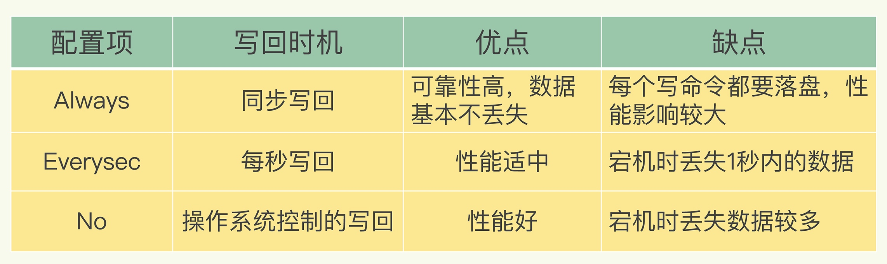
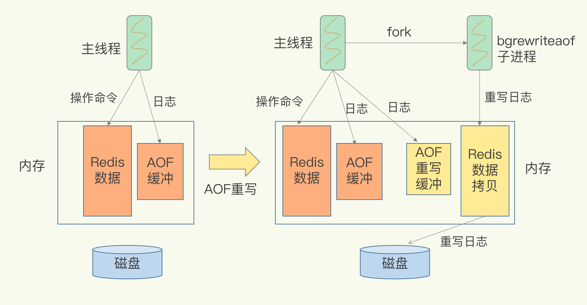
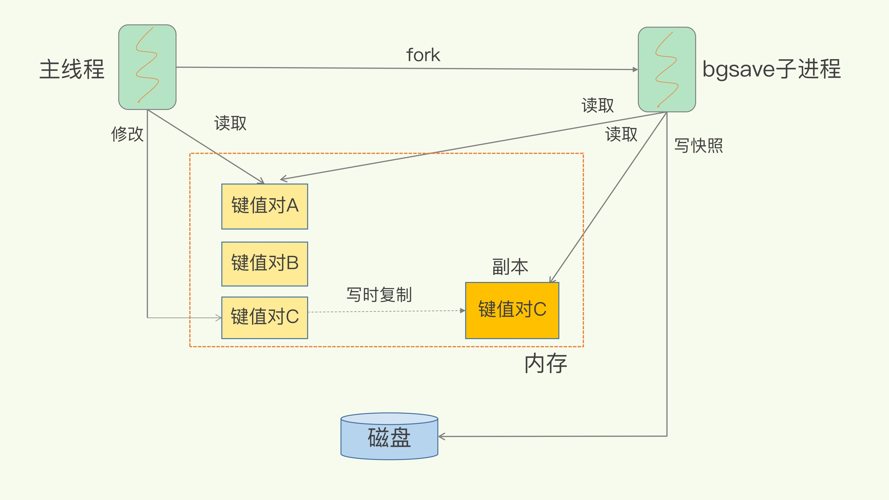
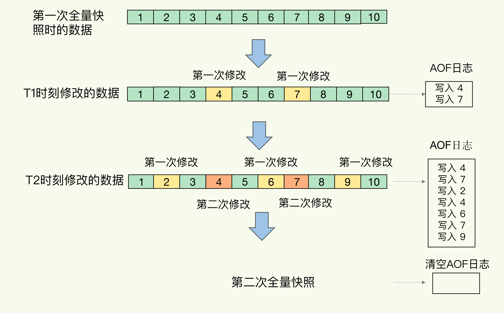

Redis 来说，实现数据的持久化，避免从后端数据库中进行恢复，是至关重要的。目前，Redis 的持久化主要有两大机制，即 AOF（Append Only File）日志和 RDB 快照；AOF 避免数据在宕机的情况下不丢失，RDB 保证在宕机后能够快速的恢复数据
AOF
AOF实现
AOF中记录的是Redis收到的每一条命令，这些命令一文本形式保存。Redis在向 AOF 里面记录日志时不会验证命令的合法性，这样如果先保存再执行可能在恢复的时候出现错误，所以Redis 是先执行命令，把数据写入内存，然后才记录日志；同时这样也不会阻塞当前执行的命令
AOF风险
- 如果执行完一个命令，还没来得及记日志就宕机，导致数据命令丢失（用作数据库）
- 可能阻塞下一个操作命令
写回策略
AOF风险都与AOF写会磁盘的时机有关，如果能够控制一个写命令执行后AOF日志写会磁盘的时机，风险就可避免，在Redis 中就是 AOF 配置项 appendfsync 的三个可选值
- Always，同步写回：每个写命令执行完，立马同步地将日志写回磁盘；
- Everysec，每秒写回：每个写命令执行完，只是先把日志写到 AOF 文件的内存缓冲区，每隔一秒把缓冲区中的内容写入磁盘；
- No，操作系统控制的写回：每个写命令执行完，只是先把日志写到 AOF 文件的内存缓冲区，由操作系统决定何时将缓冲区内容写回磁盘。
三种策略

AOF重写
AOF重写原因
AOF文件过大的性能问题：文件系统自身的限制，无法保存过大的文件；如果文件过大后期追加会导致效率低下；如果故障恢复则会非常缓慢，针对此可是使用AOF重写来控制。
AOF重写原理
通过将旧文件中的多个命令，重写为新文件中根据键值对的最新状态，为它生成的一条对应的新命令写入
AOF非阻塞重写

RDB
保证可靠性，并能在宕机后迅速恢复的持久化方法，RDB 记录的是某一时刻的数据，不是操作，恢复时可以直接读取文件内容到内存中，完成快速恢复
RDB文件生成方式
- save : 在主线程中执行，会导致阻塞
- bgsave : 创建一个子线程，专门用于写入 RDB 文件，避免了主线程的阻塞 ，默认的执行方式
RDB 写时复制
保证快照完整以及主线程同时对数据进行修改，避免对正常业务的影响

频繁执行全量备份影响
- 频繁的执行回给磁盘带来很大的压力
- 通过 fork 创建子进程过程会阻塞主进程，而且主进程内存越大，阻塞越久
混合使用 AOF & RDB
快照不用频繁的执行，避免了频繁的 fork 操作；AOF 只记录两次快照期间的操作，不会导致文件过大的问题，避免了重写开销。
